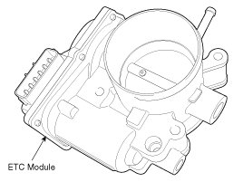
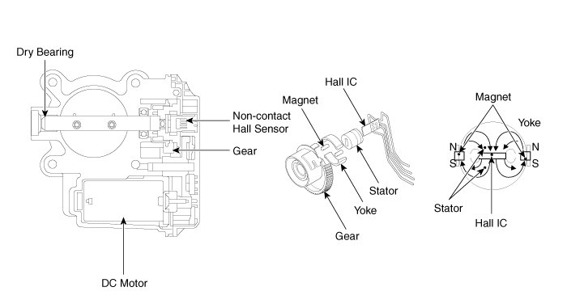
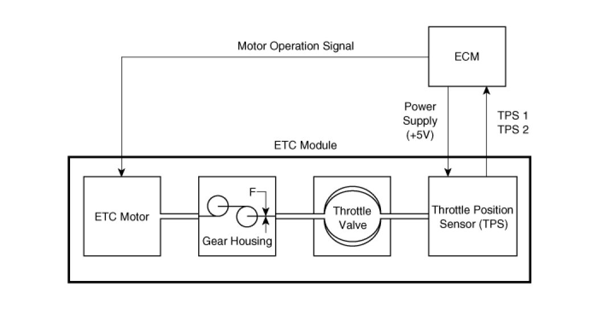

Electronic Throttle Actuator: Description and Operation
Description
The Electronic Throttle Control (ETC) System consists of a throttle body with an integrated control motor and throttle position sensor (TPS). Instead of the traditional throttle cable, an Accelerator Position Sensor (APS) is used to receive driver input. The ECM uses the APS signal to calculate the target throttle angle; the position of the throttle is then adjusted via ECM control of the ETC motor. The TPS signal is used to provide feedback regarding throttle position to the ECM. Using ETC, precise control over throttle position is possible; the need for external cruise control modules/cables is eliminated.


Schematic Diagram
